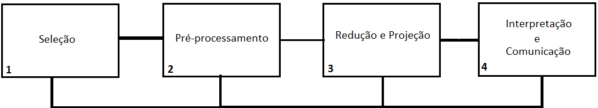
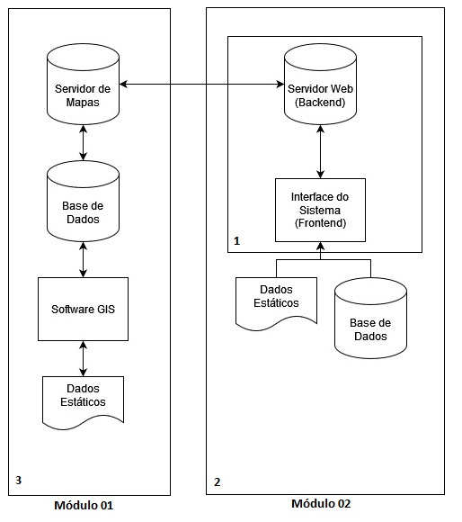

Blog Detail

Implementação de um Sistema de Informação Verde para Agrupamento de Cidades em Cenários de Desastres Ambientas
23-Fev-2023
Sistemas de Informação
Desastres ambientais têm a possibilidade de causar danos enormes e devastadores em grandes áreas. Assim, faz-se necessária uma gestão eficiente dos recursos utilizados para a recuperação dos locais afetados. Uma das formas encontradas para isso é através da utilização de técnicas disponíveis em Mineração de Dados. Assim, neste trabalho foi elaborado o desenvolvimento de uma metodologia e a implementação de um Sistema de Informação Verde (SIV), buscando servir como uma ferramenta adicional para uma melhor tomada de decisão por parte de empresas públicas ou privadas.
Contexto
Desastres ambientais geram grandes impactos e consequências na sociedade como um todo. Para se ter uma ideia, a recuperação das áreas afetadas pelo rompimento da bar-ragem de Fundão, em Mariana, considerado o maior desastre ambiental do Brasil, irá custar cerca de 150 milhões às prefeituras envolvidas, além da criação de um fundo de 20 bilhes de dólares pela empresa envolvida. Tal desastre atingiu 39 municípios, em dois estados distintos, afetando cerca de aproximadamente 1.2 milhões de pessoas, aproximadamente.
Dessa forma, fica evidente que a ocorrência de desastres ambientais pode implicar em grandes áreas de abrangência [Barbosa et al. 2015], aumentando assim a difculdade para a recuperação de tais localidades. Uma dessas dificuldades enfrentadas é na alocação eficiente de recursos financeiros destinados à recuperação, onde é necessário considerar as várias particularidades de cada município. Pensando em formas de auxiliar nesse objetivo, buscou-se, atráves do processo de Descoberta de Conhecimento em Bases de Dados (Knowledge Discovery in Database – KDD), mas especificadamente na etapa de Mineração de Dados, utilizar conceitos específicos dessa área como forma de abordar tal problema. Para isso, elaborou-se uma metodologia utilizando técnicas de Agrupamento [Jain et al. 1999] para aglomerar áreas ou cidades semelhantes em um mesmo grupo. Buscando tornar essa metodologia mais interativa e palpável, está sendo desenvolvido em paralelo um SIV que reflita todas as etapas dessa metodologia.
Segundo [Brumatti et al. 2022], a metodologia e o sistema aqui propostos agem justamente nessa etapa, sendo uma ferramenta a mais a ser considerada em tal processo. Basicamente, através do upload dos dados de uma determinada localidade, é possível agrupar as cidades lá presentes de tal forma que em cada conjunto há cidades com características semelhantes e que uma mesma ação possa ser tomada em todas elas, minimizando assim os efeitos a posteriori dos danos.
Solução adotada
Conforme baseado no KDD, a metodologia aqui desenvolvida pode ser mapeada de acordo com a Figura 2. Nela são destacadas todas as atividades e os resultados obtidos em cada uma das etapas:

De acordo com a metodologia definida na figura anterior, está sendo elaborado em paralelo um SIV. A arquitetura proposta pode ser vista na Figura 3 a seguir. Nela, destaca-se o fato de ser toda pensando utilizando tecnologia opensource, de forma que não exista custos adicionais para o projeto. Além disso, outro aspecto que se levou em conta foi seguir os padrões da Open Geospatial Consortium (OGC), buscando assim a interoperabilidade desse sistema com os demais Sistemas de Informação Geográfica (SIG) existentes.
Referências
Barbosa, F. A. R., Maia-Barbosa, P. M., Nascimento, A. M. A., Rietzler, A. C., Franco, M. W., Paes, T. A., Reis, M., Moura, K. A. F., Dias, M. F., de Paula Avila, M., et al. (2015). O desastre de mariana e suas consequências sociais, econômicas, polÍticas e ambientais: porque evoluir da abordagem de gestão dos recursos naturais para governança dos recursos naturais? Arquivos do Museu de História Natural e Jardim Botânico da UFMG, 24(1-2).
Brumatti, C. H. T., Schaefer, M. A. R., Filho, J. L., and Reis, J. C. S. (2022). Uma metodologia para apoio á tomada de decisão em cenários de desastres ambientais utilizando dados públicos. In Santos, L. B. L. and de Arruda Pereira, M., editors, XXIII Brazilian Symposium on Geoinformatics - GEOINFO 2022, São José dos Campos, SP, Brazil, November 28 30, 2022, pages 329–334. MCTIC/INPE.
Jain, A. K., Murty, M. N., and Flynn, P. J. (1999). Data clustering: a review. ACM computing surveys (CSUR), 31(3):264–323.
© Your Site Name. All Rights Reserved. Designed by HTML Codex